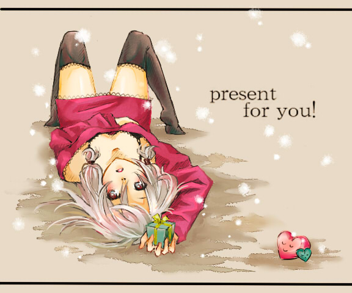

シルバーセカンド開発日誌
2010年02月
■
2010-02-27 (土) 公安シナリオ3終了▼ということでシナリオ3のメイン部分は、たった9日で終わってしまいました。
現在、公安編の最終シナリオを作成しています。
これまでより大規模なので、こっちは時間がかかりそうです。
最終話用の敵キャラやシステムを搭載したりと、
開発は順調に進行しています。
問題は花粉です。目の裏がムズムズして集中力が格段にダウンします。
ここまで必死でがんばってて助かったと思いますが、今後は
雨の日でないとなかなか１００％のコンディションが出せないかも。
花粉の多い日は低負荷の作業を持ってくるとか、工夫のしどころですね。
さて、今回は公安委員会編の登場メンバーを紹介！
公安委員会編は、見聞録のメンバーがメインで、
アルバート・ガゼル・エシュター･セト・シンまたはシズナ、狐狩ヨウコの6人です。

みんなに忘れられがちなガゼルも、今回は攻略対象です。
捜査中は、好きなパートナー（狐狩ヨウコを除く）を一人選んで、
一緒に調査することができます。能力に応じて、
捜査が進んだり進まなかったりすることも。
【今回、作業していて思ったこと】
花粉の影響か、数日前から、調子が100から80くらいに落ちました。
家の中にいても目の裏がムズムズして仕方ない！
花粉対策が必要です。もう目玉を取り出して丸洗いしたくなります。
それ以外は心身共に調子がいい状態が続いているので、
あとはいかにひたすらコンディションを維持しながら
作業していくかにかかっています。
でも、ああ、目が！ 目がああ！！
何はともあれ、今はこれまでに考えてきたやり方を最大限駆使して、
これ以上は何の理屈も必要とせずに、作業を進められる状態が続いています。
公安編に関しては、現在が最大効率といえそうで、
さほど改善の余地を感じません。
引き続き、ただひたすらがんばっていきたいと思います。
以下は、いただいた拍手コメントです！ ▼追記を開く▼＞客観的な観点抜きで、今の開発日誌と以前の開発日誌を
＞見比べてみました。以前は「会話文の途中で開発中の様子が
＞ちらほら」な感じだったのに対し、今ではその逆で「開発中の
＞様子の中に会話文がちらほら」な感じでＧＪです！
そう言われると嬉しいです、ありがとうございます。
おかげさまで、【今回作業していて思ったこと】のコーナーを入れるだけで
だいぶ日誌が書きやすくなりました。情報を伝えるときは、
ある程度枠にはめて考えるのって、楽で有効なんだなと思いました。
＞スギ花粉「最近体調良さそうだけど僕のこと忘れてないかい？」
スギ花粉さんからのメッセージです。
忘れようにも忘れられません、今も目が気持ち悪いです。
＞「ラクーンでモフりたい」
＞「夜中に一人プレイしていて、振り向いたら背後にラクーンの姿が！
＞ って感じの怖さですねコレ。怖カワイイという新ジャンルでしょうか」
モフりたい人がいる一方で、オーラが恐いという方もおられて
楽しい状況になってまいりました。素直で腹黒い、いい子ですよ。
＞ちょwイシュテナさん消しゴムしかくれないんですかww
イシュテナ先生「消しゴムなら余ってるわよ！！」 ザラザラ
＞そういえばいまさらな質問ですが、シル学は全年齢対象ですか？
ええっ！？ 私が全年齢以外のゲームを作ったことがありますか！？
もちろん全年齢対象です。もしかしたら12歳以上推奨。
そもそもそういった規制団体に申請しなくてもゲームは売れるので、
レーティングも何も付かないみたいです。
自分で勝手に81禁とか言って売るのもいいんでしょうか。■
2010-02-20 (土) 開発速度Max！▼おかげさまで、私の頭がシル学その他ゲーム製作のことばっかり
考えられるようになってきました。
うまいやり方を見つけたのもありますが、異様な集中力の高まりを感じます。
この機会に猛ラッシュをかけていきたいと思います。
いま、作るのに一番エネルギーを使うのはシル学のシナリオなので、
調子いいときは、こちらを最優先して進めていっています。
公安シナリオの３話も、必要な部分はこの一週間ですでに８割完成！
このチャンスを活かして、サッと終わらせて公安最終話に入りたいと思います。

アイテムの物々交換システム。
お互いにあげる/もらうアイテムを設定し、最終的に「印象」が
半分以上になれば交換できます。好感度が高い相手ならば、
あげる量が少なくても交換できます。
相手の好きな物を渡すと、プチイベントが発生したりする予定です。
【今回、作業していて思ったこと】
次々にネタを思いついては、ただ無心で形にする作業が
ひたすら続いています。元気なときは何も考えなくてもスラスラ進む！
今回、一点だけ新しいことが分かりました。
「いかに必要なものを入れて、量を少なくして作るか」だけを
最重視して考えたおかげか、ものすごく作りやすかったです。
逆に、作りたいものを発散させて「あれもこれも」って考えで作ると、全然進まない。
しばらくスランプになってたのは、変に欲張ってたからかもしれません。
心細くなると、むやみに量を増やすことで自身を安心させようとしますが、
それだと全体の整合も悪くなったりして、流れが悪くなるのかもしれませんね。
骨子となる部分は少なくてもいいんだよ、って思うと、非常に手が早くなりました。
今は、コンディションのおかげもあって、必要なところだけ
スパーンとネタを出してシナリオ書き作業ができる状態です！
骨ができていれば、そこに肉を足す作業って簡単なんです。
とにかく骨をしっかり作ります！ 全然ためにならない話ですみません！
でも、調子がいいときって何も考えなくても進みますからね！
本当に大切なのは、調子が悪くなったときに、どうやってカバーするかですけれど、
元気なうちはどんどん進めて行きますよおおおぉぉぉー！！
以下は前回のスクリーンショットに対していただいた拍手コメントです。
暖かい応援、いつもありがとうございます！ ▼追記を開く▼＞セト画像公開ありがとうございます！
＞今回も海岸でセトが活躍するんですね！
＞ちょっと期待しちゃいます！
まだ……何も言ってないのに……。
しかしどう考えても自分の過去の行いが原因です、
本当にありがとうございました。まっ、毎回毎回、
前より変な方向にグレードアップしてるなんて思わないでくださいよ！
たまには、まともなところに戻るかもしれないんですから！
＞この子（セト）に匂いを嗅いで貰えるなら、俺も犯罪者に
＞なりたいなあ。わたしは基本的に無害な人間ですけど、
＞とりあえず存在悪ということで捕まえて頂けないでしょうか。
＞手錠とか嬉しいです。
最近拍手コメントがどんどんこんな感じになってきて困ります。
いやまあこうやって抜粋しちゃってるので余計に増える気がして、
もうどうすればいいか分かりません。
暖かいコメントありがとうございます！
＞画像を見て思い出した。あぁ、セトってそういえば女の子だったな・・・、と
タイムリーにも、お絵かき掲示板(閉鎖)に、セクシーな格好の
セト絵を投稿してくださった方がおられましたので、
これを見てセトが女の子だったことを思い出してあげてください！

お絵かき掲示板の皆さまには、本当にいつも元気付けられています。
最近はバレンタイン祭りでした。
投稿してくださった皆さま、誠にありがとうございます。■
2010-02-13 (土) 公安シナリオ２完了▼公安シナリオの第二話作業が終わりました、テストプレイはまだです。
調子がいいときはザーッと進むので、この機会に
がんがん進めていきたいと思います！

残る必須作業は、公安シナリオ３＋４と考古学編シナリオです。
その後、ブラッシュアップ的にキャラクター固有イベントを
色々と追加していく予定です。
【今回、作業していて思ったこと】
シナリオを書く作業は、調子がいいときはどんどん進むんですが、
そうでないときは延々やっても何も進みません。
シナリオ以外にもやるべき作業はあるので、
もちろんそちらも片付けつつ進めていくのですけれど、
最近はそのサブ作業さえも思いつかないくらい調子がでなかったりもして、
アヒアヒ言ってました。いやまあ、シルドラにちょっと浮気した時点で
何となくそう思ってはいたんですけれど、
調子が戻ってみると、余計にそう思います。
調子さえ出れば、どんどん進みます。
寒かったり暖かかったり花粉症だったりで体調を崩しやすい時期ですが、
心身ともに、より意識してコンディションを保っていきたいと思います。
って、こう思えるのも、元気だからなんでしょうけれど！
元気なくなったら「コンディション保とう」なんて言えない！
でもだからこそ、今の元気な状態を少しでもキープできるよう、
努力していきたいですね。公安３話もがんばります！
【ウディタに賞をいただきました】
Vectorの『Windows 7 アプリケーションアワード』にて、
WOLF RPGエディターがグランプリをいただきました！
http://www.vector.co.jp/award/windows7/ (ｱｰｶｲﾌﾞ)

投票してくださった皆さま、本当にありがとうございました。感謝の極みです。
これからもバリバリ更新していきたいと思います！
WOLF RPGエディターは、ただいま、Ver1.16をテスト中です。
コモンセルフ変数の使用状況をまとめて一目で確認できる機能など、
また地味な部分で強化しています。
以下は気になった拍手コメントへの返信です。 ▼追記を開く▼＞シルドラ２期待しています！１ではスピードあげすぎると
＞余計にきつくなりましたが、その辺の修正はされているのでしょうか・・・
どちらかというと遅めです。速ければ速いほどいい！
でも装甲を増やすと移動力が遅くなったりするなど、
微妙なチューン要素もあります。
＞スクリーンショットに『右クリック兵器』『左クリック兵器』と
＞ありますが、シルフドラグーン2はマウス操作なのでしょうか。
マウスと十字キー（またはWASDキー）を併用します。
＞ところでシルフドラグーン2はシェアですか？
フリーゲームです！ ご期待ください。
＞クール＆ビューティーキャラが大活躍・・・
＞この右上のキャラ画像表示は攻撃を受けたら脱げる！
ダメージでは脱げません。特殊な条件を満たすと脱げます。■
2010-02-05 (金) ウディタ周りのお話▼シルフェイド学院物語は公安編第二シナリオ情報収集パート作成中です。
疲れたらシルフドラグーン2を作成。もうそればっかり！
ということで今回はWOLF RPGエディター(公式)周りのニュースをいくつか。
『ウディタ新聞』(ｱｰｶｲﾌﾞ)が開始されました。
Gil様他4名の執筆者様により、1月からウディタ新聞が運営開始されています。
WOLF RPGエディターに関する、素材や開発状況のニュース、コラムなどが
掲載されています。今後はウディタ作品のレビューも行っていくみたいです。
『ウディタ基本素材セット』(ｱｰｶｲﾌﾞ)が公開されました。

約8ヶ月もの製作期間を経て、ファンタジー用としてベーシックな素材を集めた、
ウディタ基本素材セットが公開されました！
キャラクターチップ・顔グラフィック・BGM・戦闘エフェクト・SEが同梱されていて、
サンプルゲームに導入すれば素材のバランスがかなり整います。
特にエフェクトおよびそのSEに関しては、フリー素材としては
他ではとても手に入らないような統一感とクオリティです。
あとは素材が一覧できるページがあったら最高なんですけれど！
とにもかくにも、素材がそろっていないと思うウディタ作者の人は
ぜひ導入なさってみてください、開発の幅が広がります。
基本素材セットは、最終的な素材差し替えも視野に入ったものらしく、
もっとクオリティが高い素材がそろった場合は、切り替えたり
していくと思われます（もちろん統一感は重視されますが）。
素材が作れる方で、腕に自信がある方は、
よりよい素材を投稿してみるのもいいかもしれませんよ？
で、せっかくなのでシルフドラグーンのセットアップ画面も。

今回もお金でパワーアップできる他、
お金で新たな武装・機体を購入することができます。
シルフドラグーン2の公開ですが、以下のように予定しています。
1．シルフドラグーン2のシステムに、軽いシナリオくっつけたものを
単品として公開（3月～4月頃を予定）。フリー作品です。
2．シル学に、シルフドラグーン2のシステムだけのゲームを搭載
（プレイ状況に応じてキャラ別の感想が出たりする）
と言う風にする予定です。まあストーリーはテキストファイルで
ぽちぽち打っていれば作れるので、おまけ的に。
以下は拍手コメント。 ▼追記を開く▼＞今年はウディタ公式コンテスト開かれるのでしょうか～？
＞もし開催される場合、そろそろ準備をしたいな～って思ってます！
今年も8月にウディタ公式コンテストを開きます！
半年前になりましたから、そろそろ告知したいかなと思っています。
＞モノリスさんの画像があったのでモノリスフィアの続編かと
＞勘違いしました。それにしてもウディタは何でもできるんですね。
＞これを見たのをきっかけに何かいじってみましょうか・・・？
勘違いさせて申し訳ございません！モノリスさんは仮ですよ、仮！
シルドラ2本編ではクール＆ビューティーキャラが大活躍です。
ウディタいじりも、よかったらぜひ！というか、ゲーム製作って、
変数操作とピクチャ表示と音声再生とキー（マウス）入力受け付けが
できれば何でもできる気がします。
＞狼煙さんが銀髪っこを好きだと信じてやみません。
もちろん今でも好きですが増えすぎたので減らさないと……。
＞てっきり秘密裏に阻止しようとしているものとばかり
＞思っていたのですが、シル学の人全員が世界滅亡寸前って
＞知ってるものなんですか？それとも最初は知らないけれど、
＞シル幻で雪が降ってきたみたいな感じで最終的に世界中の
＞人が気付いてしまう感じなのでしょうか？
ネタバレネタバレ！それはシナリオごとにまちまちです。
＞シルドラ2ですか、なんかゲージの辺りが凝ってますね。
今回は見栄えだけがんばりました。
＞＞ブルマ着用でお願い申し上げます。
＞に激しく同意してしまいました･･･。カモンブルマ！
わあ。関係ないですがブルーマというとオブリビオンを思い出します。
＞シンシズが出るせいで当のシーナがでられないとか本末転倒な
＞気が（ｒｙ子孫から容赦なく出番を奪うとは恐ろしい姉弟・・・！
幻想譚ではあんまり出番のなかったキャラがシル学で大活躍です。2010年02月
Copyright © SmokingWOLF / Silver Second
 カテゴリ: シル学
カテゴリ: シル学 カテゴリ: シル学
カテゴリ: シル学